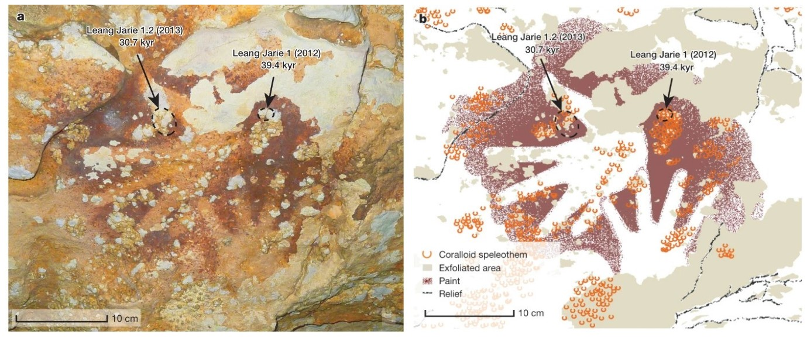

Conjecture about Cave Paintings in Maros Karst, Indonesia
—An Unexpected Discovery May Have Unveiled the Mystery of the “Great Leap Forward” in Early Human Behavior

An overview of Pleistocene sites with cave art
Fig. 1. From "Oldest cave art found in Sulawesi" by Bruum A., et al., 2021
Outline of the research
Based on the assumption and analysis of the migration process of AMH (Anatomically Modern Humans) from African origins, more remote areas from Africa are generally assumed to have younger and sparser archaeological sites. When studying the origins, these areas are often undervalued, as the rock art of Southeast Asia has always been less thoroughly studied than that of Europe. However, in 2014, new dating evidence from Sulawesi Island in Indonesia demonstrated that the earliest cave paintings of AMH in Southeast Asia are of the late Pleistocene age and as early as those of Europe (Aubert, et al., 2014). The similar form of motifs painted in caves in both areas demonstrates a shared underlying stimulation that led to this behavioral modernity and variability (Taçon, et al., 2014).

An overview of Pleistocene sites with cave art
Fig. 2. From "Cave Artists of Sulawesi" by Graham Chandler, 2015.The cave paintings of The Maros karst on Sulawesi Island, Indonesia, were discovered as early as the 1950s and since then believed to be less than 10 kyr in age (Roebroeks, 2014). However, in 2014, Aubert’s team dated some of the paintings and unexpectedly found them to be one of the oldest cave paintings in the world. This spectacular finding implies that engraving images on cave walls were already a prevalent activity as early as 40,000 years ago in Southeast Asia at the other end of the Pleistocene Eurasian continent.
Methodology - How do scientists date cave paintings?
Mineral-rich water trickling over cave walls can form thin layers of calcite called speleothem, which contains uranium. The radioactive decay of uranium makes the dating of the cave walls possible. This is called the uranium–thorium dating method.

Scientists measure the activity ratios of parent (Uranium) and product (Thorium) isotopes by calculating the disintegration of the parent to the daughter over time. The U-Th dating method can be used for samples dated between present and over 500 kyr, which represents a much longer timespan than 14C dating (~40 kyr).
Discovery
Aubert’s team found several unexpected results in the Karst Maros. One stenciled hand was painted at least 39 kyr BP (See Fig. 4.) and images of a babirusa (pig deer) and a large pig-like mysterious animal were painted at least 35 kyr BP (See Fig. 6., Aubert, et al., 2014). It is comparable in date with a red disk from El Castillo, the oldest cave painting known so far, in northern Spain with a minimum age of 40 kyr (Pike, et al., 2012).

Now Aubert’s team has proved cave paintings appeared in Europe and in southeast Asia at about the same time around 40 kyr BP. This is an important observation, but the contemporaneity of cave paintings in both areas was not likely a result of the southern dispersal and the coastal migration because of the great distance of the length of Eurasia continent. Archaeologists have not even decided on what factors stimulated these AMH to create these cave paintings.
Occasional paintings?
But have we ever considered that those handprints were most likely incidental to ordinary or chaotic activities, like the marks left by daily hunting or tribal bloodshed when dragging bodies (Medina-Alcaide et al., 2017), and were later associated meaningfully with ochre? And some ethnologists’s studies suggests that these red marks may be a surplus of a red paste they mixed with ochre powder and herbs to protect them from injury (Medina-Alcaide et al., 2017).

Figurative paintings
Whether the creation of handmarks is unintentional remains to be argued, but the creation of figurative paintings is undoubtedly intentional. One of the distinguishing traits separating the Upper Paleolithic from the Middle Paleolithic is the appearance of figurative art, which has been seen as symbolizing the emergence of full behavioral modernity (Yosef, 2002) And what's intriguing is that in all the Paleolithic archaeological research so far, the fact that human images in cave paintings were exceptional. Instead, animals were typically painted, including those that were used as food as well as those that symbolized strength (Auber, 2019).

The creation of figurative painting shows an epoch-making point of behavioral modernity, representing the emergence of early human behavior with the ability to use complex abstract thinking and display creativity, while the variability of behavior means that the early human behavior itself is endowed with meaning on the basis of modernity (Yosef, 2002). Both may be attributed to an important genetic mutation or biological reforming of the brain. And possible explanations for the cause of these two mechanisms above will be explored around two main points: the role of the natural feature and the cave itself.
The first cause is the natural feature. Although itself alone is unlikely to result in the ability to produce intentional animal descriptions. As one of the natural features most capable of evoking the dynamic vision of our ancestors as hunters, animals are essential to the evolutionary survival of members of AMH (Hodgson, 2003). Some defined areas of the visual brain have been dedicated to detecting and encoding animal contours receiving strong stimulation, leading to human's high sensitivity to the perception of contours. This encourages the formation of figurative art in AMH’s brain, and further reflects in the painting art for convenient memory (Hodgson & Pettitt, 2018).
The second cause is the cave itself. As a result of its dim environment, it can be difficult to tell artistic figures apart from their natural surroundings. In this way, the cave will mimic the difficulties that hunters frequently encounter when pursuing animals while keeping an eye out for potential predators (Edensor 2013; Galinier et al. 2010). Since vision is the most important sense in the brain coding function, when this sense is blocked, imagination steps in and other senses, such as touch, also come into play. This process may stimulate and develop previously untapped brain modules.
Conclusions
In recent years, more accurate and precise dating methods have been invented and applied to archaeology research. Our understanding of Palaeolithic cave art in the timing and nature of its origins was placed on a firmer foundation. Cave art currently constitutes the earliest known example of art in the world, and the presence of animal depictions is proved to be a similar theme across space.
At the same time, the depiction of animals by early humans also validates the possibility of animal murals helping and strengthening the cognition of early humans' senses and self-awareness, thus gradually adding the meaning of their own existence to the figurative art, such as the controversial point of the handprint in this paper. But it is worth noting that hand stencils have a more limited distribution than naturalistic animal paintings (Tacon, et al., 2014), which means that there may not be a direct correlation between the time and cause of their appearance on the same fresco. Perhaps the earliest handprints and figurative art still need to be discussed respectively, and more subsequent discoveries and studies are needed as evidence and authentication.
Bibliography
-
Aubert, M., Brumm, A., Ramli, M. et al., 2014. Pleistocene cave art from Sulawesi, Indonesia. Nature (London), 514(7521), pp.223–227.
-
Aubert, M., Lebe, R., Oktaviana, A.A. et al., 2019. Earliest hunting scene in prehistoric art. Nature (London), 576(7787), pp.442–445.
-
Cyranoski, D., 2014. World's oldest art found in Indonesian cave. Nature (London)
-
Edensor, T., 2013. Reconnecting with darkness: gloomy landscapes, lightless places. Social & Cultural Geography, 14(4), pp.446-465.
-
Galinier, J., Monod Becquelin, A., Bordin,et al., 2010. Anthropology of the night: Cross-disciplinary investigations. Current Anthropology, 51(6), pp.819-847.
-
Hodgson, D., 2003. The biological foundations of Upper Palaeolithic art: stimulus, percept and representational imperatives. Rock Art Research, 20(1), pp.3-22.
-
Hodgson, D., & Pettitt, P., 2018. The Origins of Iconic Depictions: A Falsifiable Model Derived from the Visual Science of Palaeolithic Cave Art and World Rock Art. Cambridge Archaeological Journal, 28(4), pp.591–612.
-
Langley, Hakim, B., Agus Oktaviana, A., Burhan, B., et al., 2020. Portable art from Pleistocene Sulawesi. Nature Human Behaviour, 4(6), pp.597–602.
-
Roebroeks, W., 2014. Art on the move. Nature (London), 514(7521), pp.170–171.
-
Taçon, Tan, N. H., O’Connor, S., Xueping, J., Gang, L., et al., 2014. The global implications of the early surviving rock art of greater Southeast Asia. Antiquity, 88(342), pp.1050–1064.
-
Yosef, O., 2014. The Upper Paleolithic Revolution. Annual Review of Anthropology, 31(1), pp.363–393.